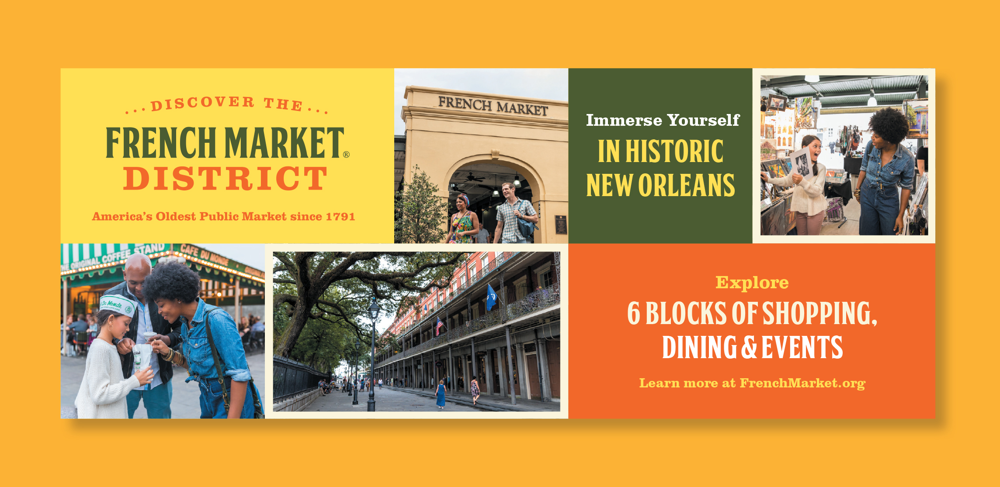
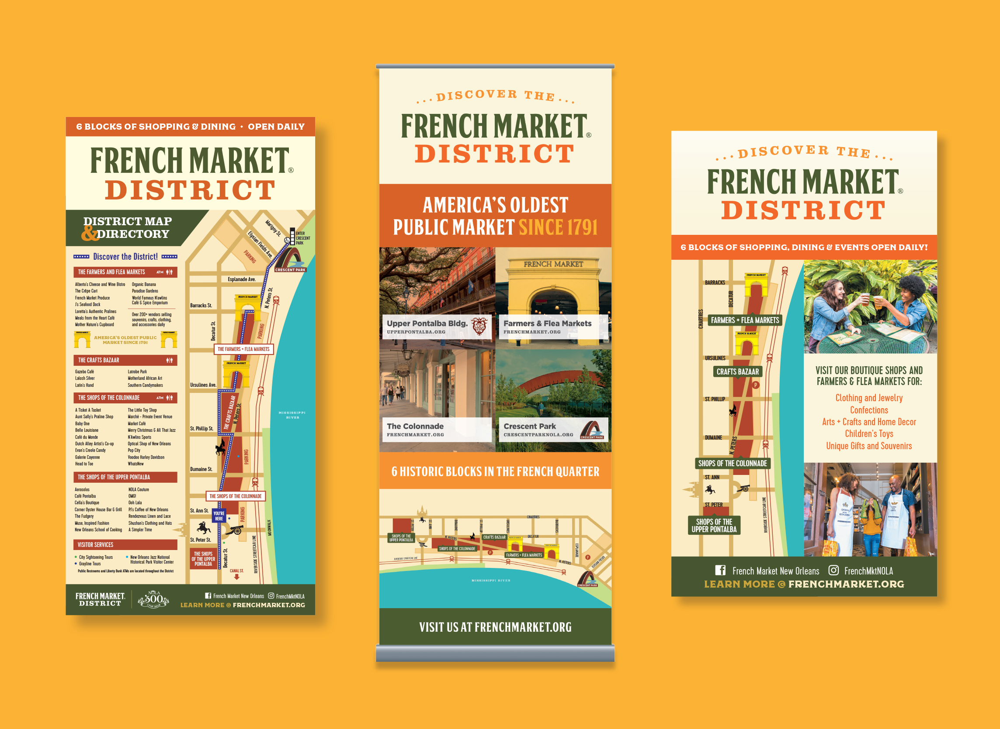
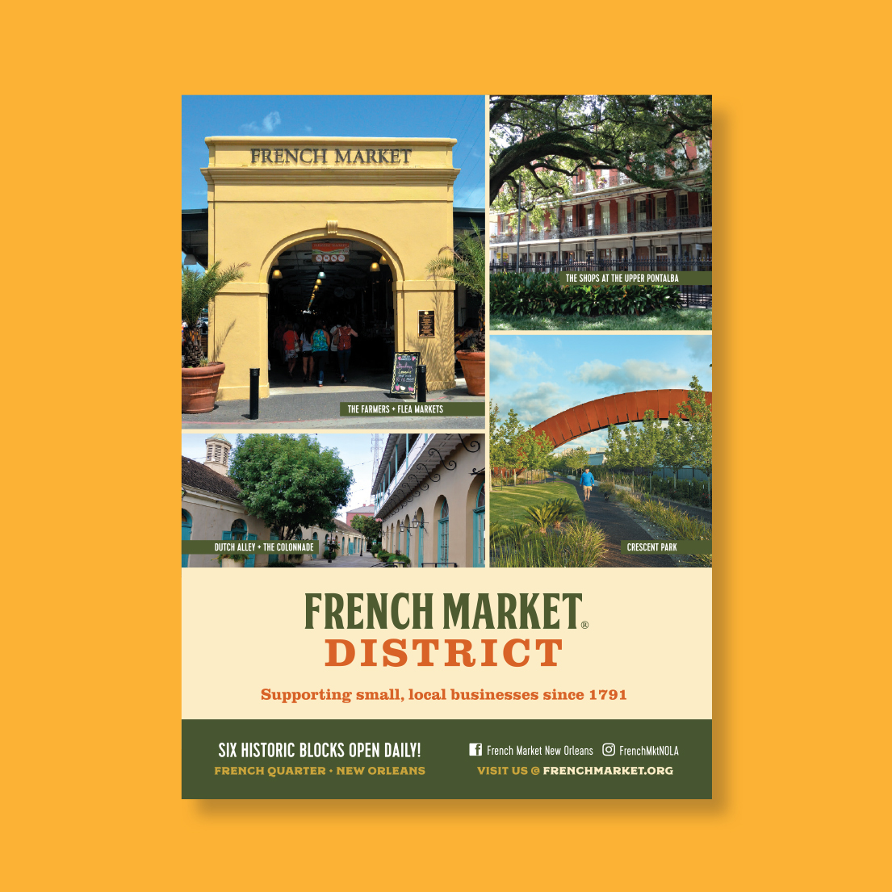
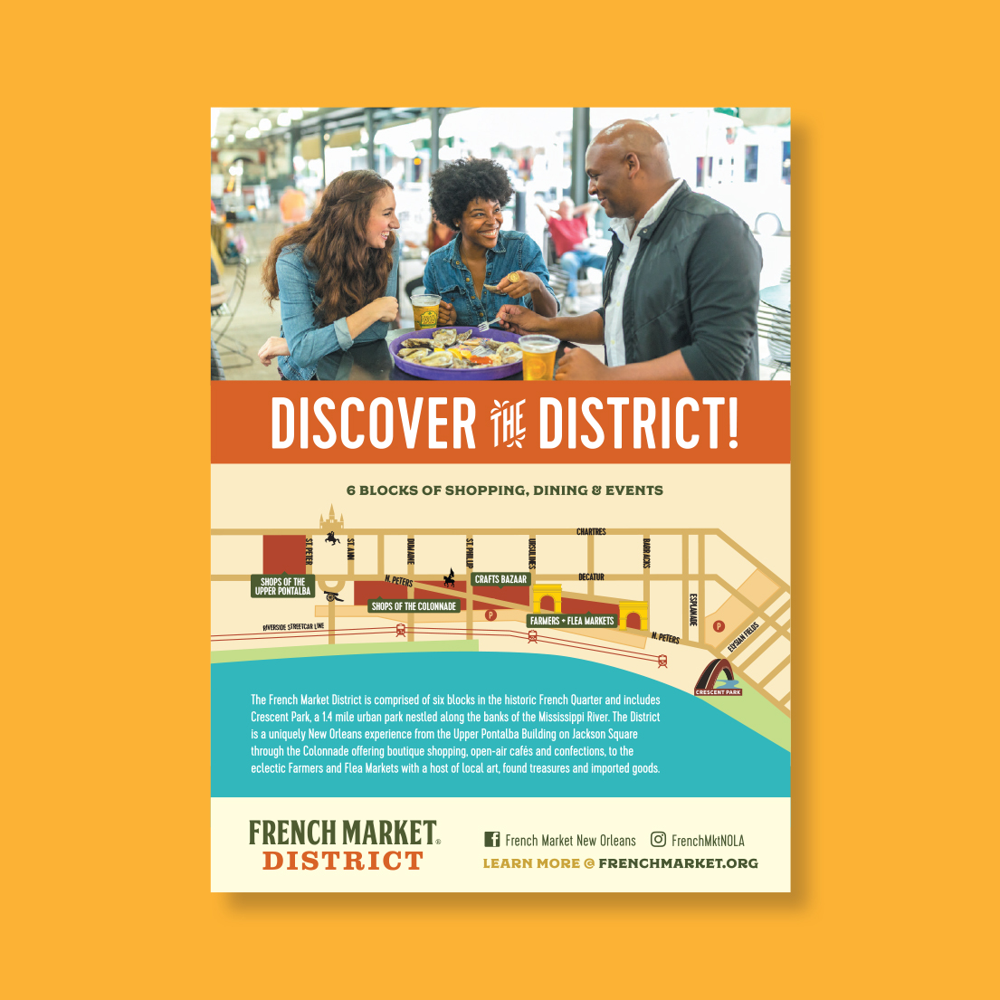
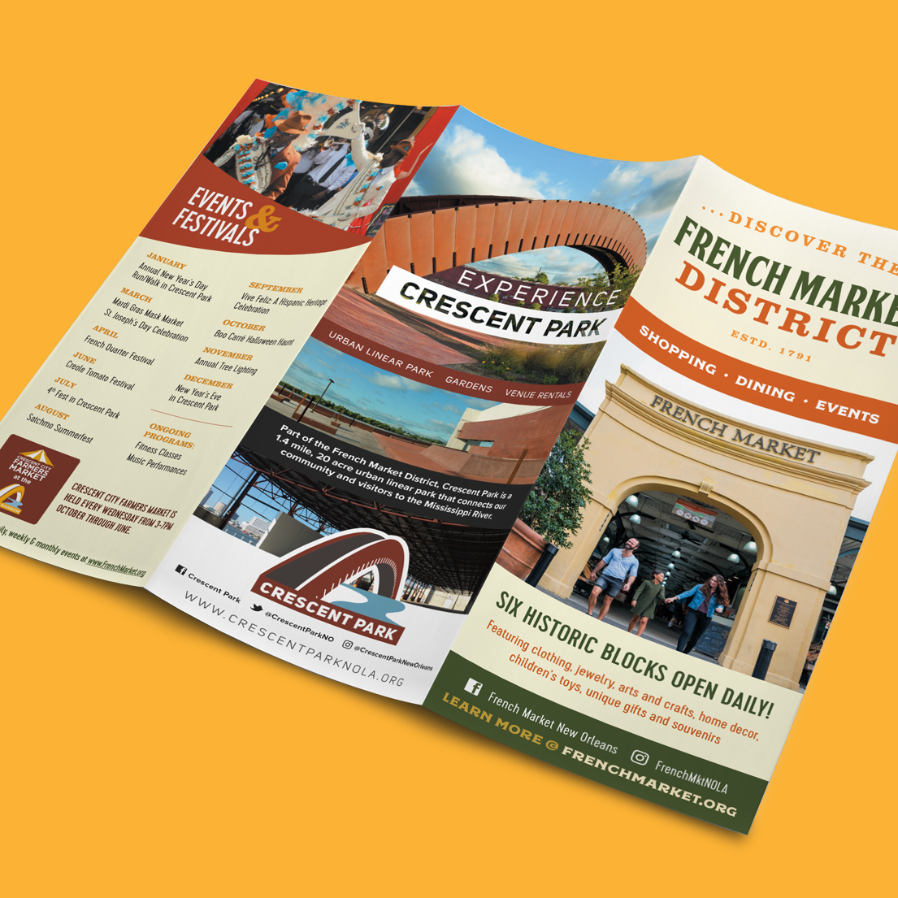
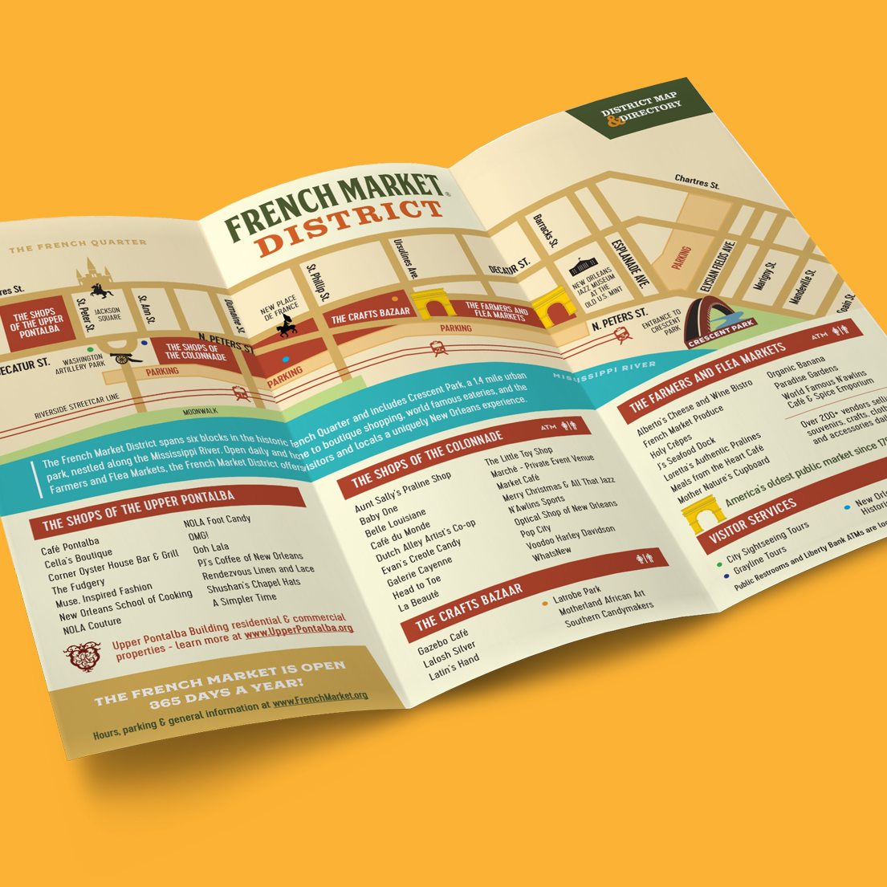
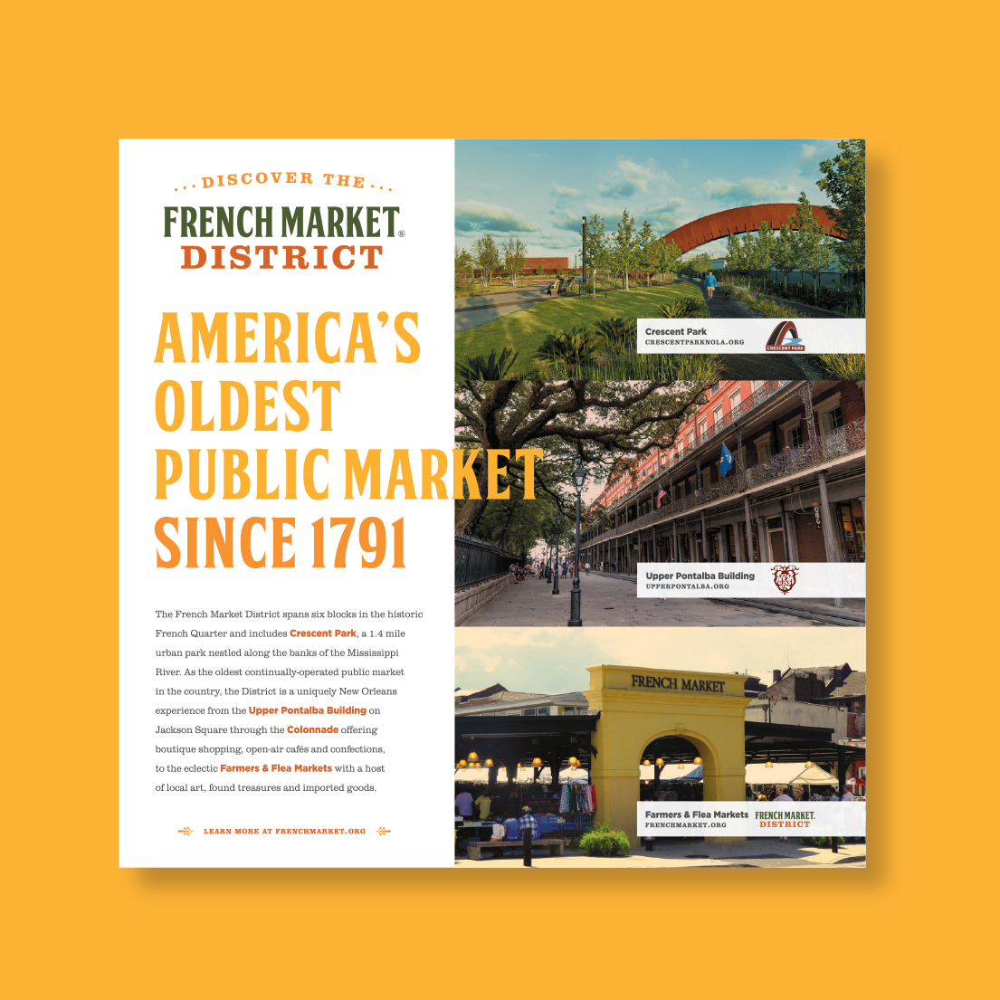
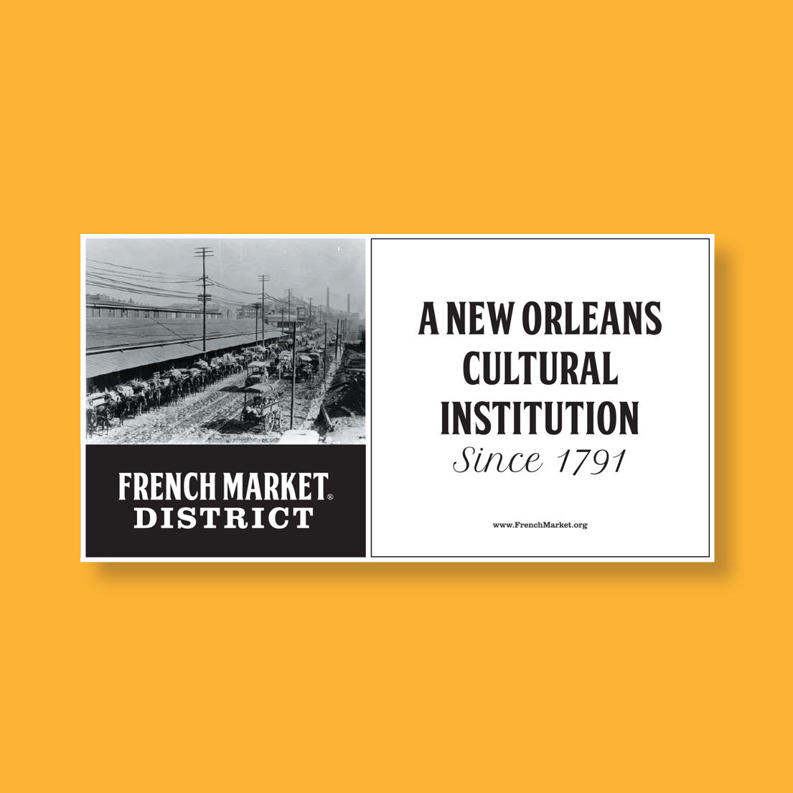
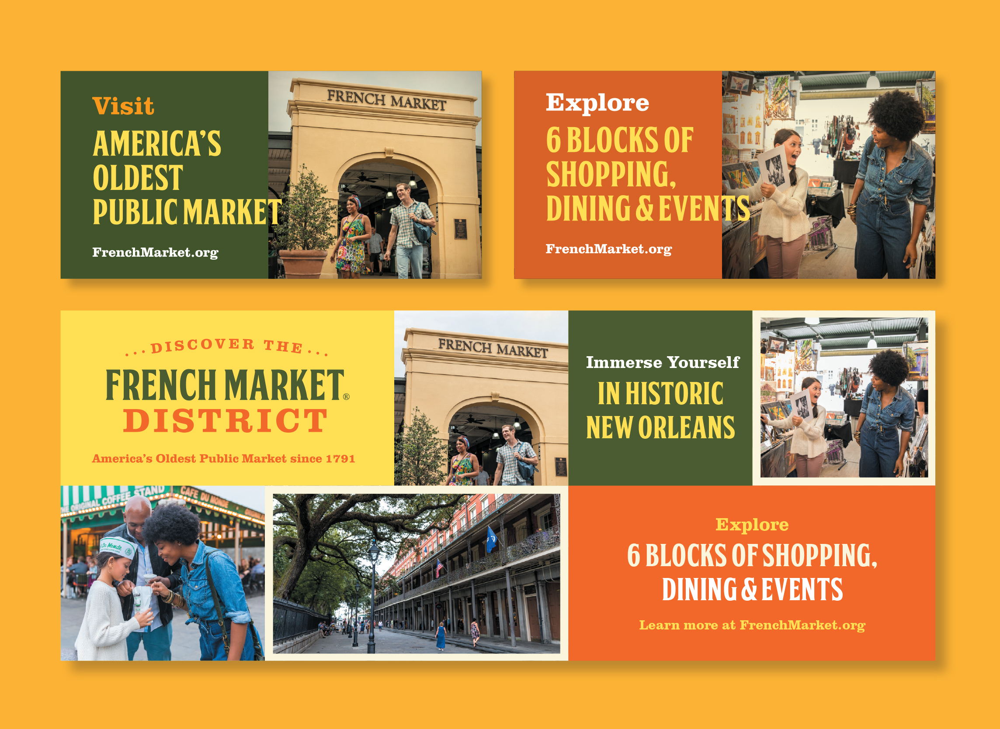
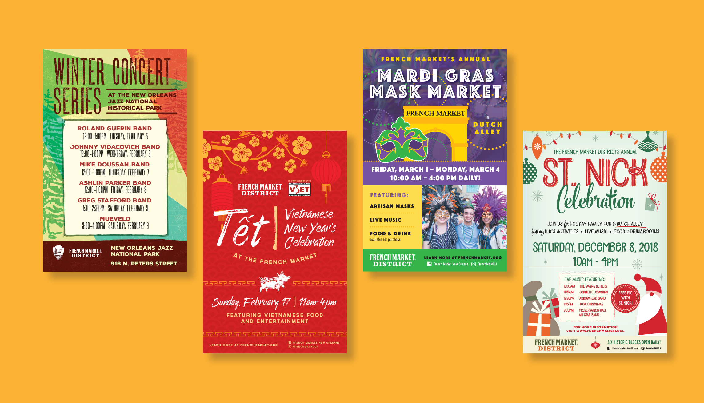

- Client
- French Market Corporation
- Agency
- Deep Fried Advertising
- Active
- 2012-2021
- Role
- Lead Designer
- Work
-
- Print Design
- Digital Design



I have worked with the French Market since 2012. Over the years, I’ve created advertisements, promotional materials, out-of-home signage, and event graphics including their largest event: the annual Creole Tomato Festival. The District is rooted in tradition yet it constantly reinvents itself with new offerings that attract thousands of visitors. The brand represents both a historic and modern feel by pairing warm colors with bright imagery and bold typography.





In addition to advertising for the District, I’ve also branded several of their seasonal and cultural events.
